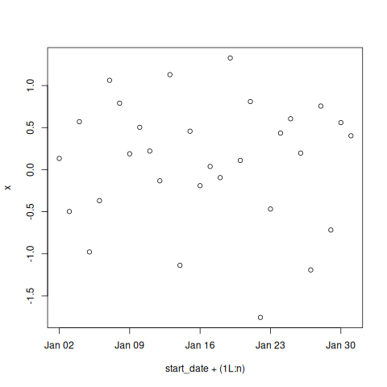

R is a dynamic language for statistical computing that combines lazy functional features and object-oriented programming. This rather unlikely linguistic cocktail would probably never have been prepared by computer scientists, yet the language has become surprisingly popular.
Rotinas Imperativas
weight <- 85
size <- 1.84
(BMI <- weight/size^2)
### Definition of an object BMI
setClass("BMI", representation(weight="numeric", size="numeric"))
setMethod("show", "BMI",
function(object){cat("BMI =",object@weight/(object@size^2)," \n ")}
)
### Creation of an object for me, and posting of my BMI
(myBMI <- new("BMI",weight=85,size=1.84))
### Creation of an object for her, and posting of her BMI
(herBMI <- new("BMI",weight=62,size=1.60))
### Traditional programming, no type
(weight <- "Hello")
## Using classes
new("BMI",weight="Hello",size=1.84)
herBMI.show()
## Error in herBMI.show() : could not find function "herBMI.show"
herBMI.show
## Error: object 'herBMI.show' not found
herBMI
## BMI= 24.21875
is.object(herBMI)
## [1] TRUE
Objetos com métodos implícitos, como ___init___, em Python:
class Person:
def __init__(self, name, age):
self.name = name
self.age = age
p1 = Person("John", 36)
print(p1.name)
print(p1.age)
(let [person {:name "John" :age 36}]
;; supérfulo criar um alias:
;; p1 person
(do
(println (:name person))
(println (:age person))))
;; (f x y)
;; (let binds body)
;; (+ 1 2)
(let [person {:name "John" :age 36}
show (fn [obj] (str (:name obj) " " (:age obj)))]
;; supérfulo criar um alias:
;; p1 person
;; (:name person)
;; (:age person))
(show person))
package main
import (
"fmt"
"strconv"
)
type Person struct {
name string
age int
}
func (p Person) show() string {
return p.name + " " + strconv.Itoa(p.age)
}
func main() {
//creating struct specifying field names
p1 := Person{
name: "Fulano",
age: 20,
}
//creating struct without specifying field names
p2 := Person{"Ciclano", 37}
// "show" method
fmt.Println(p1.show())
fmt.Println(p2.show())
}
Some languages, like
PerlandCommon Lisp, allow the programmer to choose static or dynamic scope when defining or redefining a variable.Examples of languages that use dynamic scope include
Logo,Emacs Lisp,LaTeXand the shell languagesbash,dash, andPowerShell.
Let - raízes do conceito(let ((a 1)
(b 2))
(+ a b))
(defun f (a b)
(+ a b))
(f 1 2)
(defclass book ()
((title :reader title
:initarg :title)
(author :reader author
:initarg :author))
(:documentation "Describes a book."))
(defmethod show ((b1 book))
(let ((titulo (title b1))
(autor (author b1)))
(print (format T "~S, ~S" titulo autor))))
(defparameter b1 (make-instance 'book
:title "ANSI Common Lisp"
:author "Paul Graham"))
(show b1)
require(grDevices)
setClass(
Class="Trajectories",
representation=representation(
times = "numeric",
traj = "matrix"
)
)
setMethod(
f= "plot",
signature= "Trajectories",
definition=function (x,y,...){
matplot(x=x@times,
y=t(x@traj), ## (x, y) coordenates
xaxt="n",
type="l",
ylab= "",
xlab="",
pch=1 ## plot specification
)
axis(1,at=x@times)
}
)
trajPitie <- new(Class="Trajectories")
trajCochin <- new(
Class= "Trajectories",
times=c(1,3,4,5),
traj=rbind (
c(15,15.1, 15.2, 15.2),
c(16,15.9, 16,16.4),
c(15.2, NA, 15.3, 15.3),
c(15.7, 15.6, 15.8, 16)
)
)
trajStAnne <- new(
Class= "Trajectories",
times=c(1: 10, (6: 16) *2),
traj=rbind(
matrix (seq (16,19, length=21), ncol=21, nrow=50, byrow=TRUE),
matrix (seq (15.8, 18, length=21), ncol=21, nrow=30, byrow=TRUE)
)+rnorm(21*80,0,0.2)
)
par(mfrow=c (1,2))
plot(trajCochin)
plot(trajStAnne)
Nome do arquivo: r-script
#!/usr/bin/r
require(grDevices)
options(echo=TRUE) # if you want see commands in output file
args <- commandArgs(trailingOnly = TRUE)
print(args)
# trailingOnly=TRUE means that only your arguments are returned, check:
# print(commandArgs(trailingOnly=FALSE))
start_date <- as.Date(args[1])
name <- args[2]
n <- as.integer(args[3])
rm(args)
# Some computations:
x <- rnorm(n)
png(paste(name,".png",sep=""))
plot(start_date+(1L:n), x)
dev.off()
summary(x)
Rscript $(command -v r-script) 2023-01-01 "Deltrano" 30

R:
https://cran.r-project.org/doc/contrib/Genolini-S4tutorialV0-5en.pdf
Common Lisp: